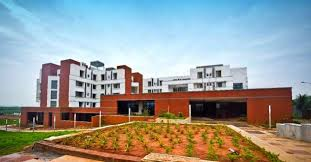

The Social Centre is divided
into multiple blocks, with each
block consisting of three to
fourfloors. The rooms are built
to accommodate two people
and come with attached
bathrooms. A group of four
such rooms form a living unit
along with the collaboration
space and a balcony. Separate
blocks are allocated to men
and women.